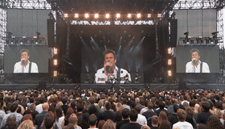
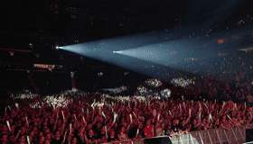
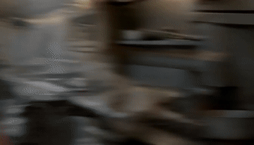
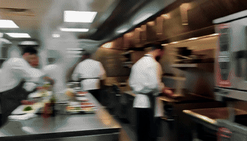
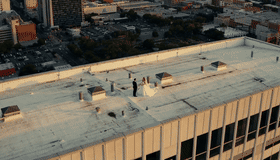
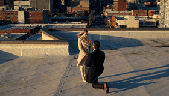

RAW vs prompt-expanded video
Each pair uses the same scenario and seed. Homepage demos are the strongest complex camera / cut / dialogue PE-wins from the published MiniMax-H3 set (s15 / s14 / s13): concert crash-zoom multicuts, kitchen whip-pan montage, and rooftop arc proposal.
Arena concert crash-zoom multicuts


Kitchen whip-pan montage


Rooftop arc proposal

